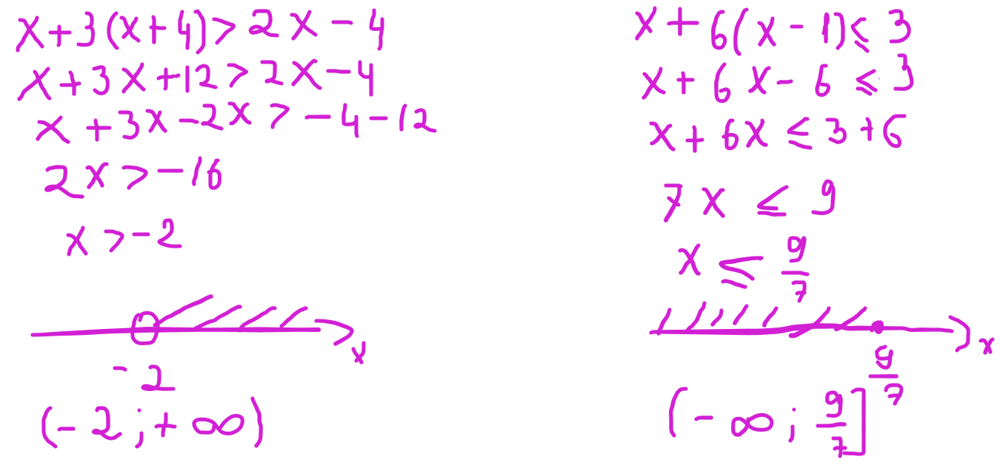
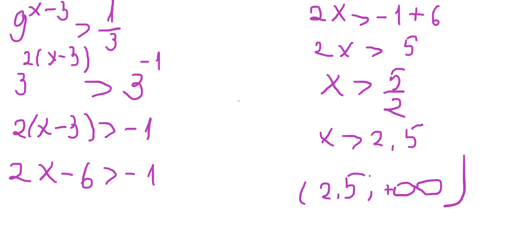
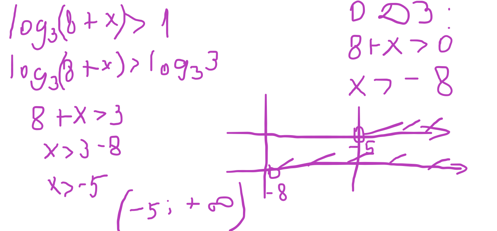

Решается просто как обыкновенное уравнение, просто вместо знака равно стоит знак неравенства, на который внимание не обращаем
*если делим на отрицательное число, то знак меняем на противоположный( больше(или равно) на меньше(или равно), меньше(или равно) на больше(или равно))
1) Заменить знак неравенства на равно
2) Решить квадратное уравнени
3) Отметить корни на координатной прямой
4) Определить знак у каждого промежутка, взяв любое число из него и подставив в исходное неравенство
5) Записать ответ

1) Перенести все в левую сторону
2) Записать, что числитель равен нулю, а знаменатель не равен нулю
3) Отметить эти точки на координатной прямой
4) Определить знак у каждого промежутка, взяв любое число из него и подставив в исходное неравенство
5) Записать ответ
*точки из знаменателя всегда пустые
Решается как показательное уравнение, просто вместо знака равно стоит знак неравенства, на который внимание не обращаем
Решается как Логарифмическое уравнение, просто вместо знака равно стоит знак неравенства, на который внимание не обращаем
